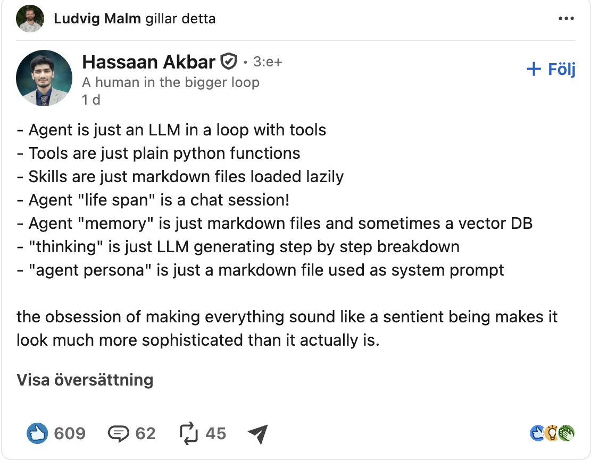

AI-assisterad kodning
Vad AI-verktygen kan, vad de inte kan – och hur vi använder dem på rätt sätt.
Allt går väldigt fort
Nya AI-modeller släpps hela tiden
Verktygen förändras snabbt
Ingen vet ännu vad som är bäst praxis
Spännande eller oroande?
👍 Fördelar
- Utveckla snabbare än någonsin
- Ge sig på större och svårare uppgifter
- Spännande nya möjligheter
⚠️ Risker
- Kod som ser rätt ut – men inte är det
- Dolda buggar, säkerhetshål och onödigt krånglig kod
- AI har verkliga begränsningar
Målet: använd kraften i AI-verktygen – men se till att det vi bygger är bra och pålitlig mjukvara.
Hur mycket skriver AI:n?
- Människan skriver all kodIngen AI alls
- Människan skriver – AI:n hjälper tillFörslag, förklaringar, autokomplettering
- AI:n skriver – människan styrDu beskriver, granskar och testar
- AI:n skriver all kodIngen människa läser koden
Ju längre ner, desto viktigare att du förstår och testar koden.
Nivå 1Du skriver all kod
- Du fattar alla beslut
- t.ex. vilken teknik och vad saker ska heta
- Du får en stark förståelse för programmet
- Att skriva kod själv är fortfarande värt det
- Lägg tid på att bli en bra programmerare
- då blir du också bättre på att använda AI-verktygen
Nivå 2 AI som assistent
"Förklara det här felmeddelandet …"
"Hjälp mig välja …"
"Granska den här koden …"
Du skriver koden. AI:n svarar på frågor – som en kunnig kompis bredvid dig.
Parprogrammering
- Kommer från Extreme Programming (Kent Beck)
- Föraren (driver) har tangentbordet och skriver
- Navigatören (navigator) tittar, tänker och ger feedback
- Två som jobbar tillsammans gör bättre kod
- Med AI har du alltid en kunnig partner till hands
Nivå 3AI:n skriver, du styr
- AI:n är föraren i parprogrammeringen
- AI:n skriver koden
- Du är navigatören: följer med, ställer frågor och styr om
- Du bestämmer över de viktiga besluten
- Små beslut kan du lämna över
- t.ex. vad testmetoderna ska heta
Vilka verktyg finns?
Från AI-företagent.ex. Claude, Codex, Antigravity
Editorer byggda för AIt.ex. Cursor, Windsurf
Öppen källkodt.ex. OpenCode
Tillägg i din editort.ex. GitHub Copilot i VS Code
Vad gör en kodagent?
- Skickar din fråga (prompt) till språkmodellen (LLM)
- Låter modellen använda verktyg:
- läsa och ändra kod
- köra kommandon i terminalen
- Håller reda på vad modellen behöver veta (kontext)
- Kan byggas ut med nya förmågor
- Kan dela upp jobb på flera underagenter som jobbar samtidigt
På engelska kallas programmet runt modellen för en coding harness.
En agent = tre saker
En LLM-modellhjärnan – tänker och bestämmer vad som ska göras
Verktyghänderna – läsa och ändra kod, köra kommandon
En loopgör om och om igen – tills uppgiften är klar
Loopen: tänk → använd ett verktyg → titta på resultatet → tänk igen …
Det är inte magi

Piltangenterna byter bild ·